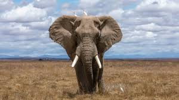

This is an image of a ELEFANT.The African savannah elefant is the world's biggest land mammal.It lives across many different habitats,including opn savannahs,deserts and forests.As these animals roam,they play an important role withintheir ecosystem.They dispers seeds from their dung helping to fertilise the land; they clear paths through vegetation and overgrown bush, promoting plant diversity; and they use their tusks and feet to access water in dry riverbeds, creating small watering holes for other animals.
African savannah elephants are found in 23 countries across Africa. They have large populations in Kenya, Botswana, Namibia, Tanzania, South Africa, Zambia, and Zimbabwe.
The IUCN classifies the African savannah elephant as endangered. This means it is at a very high risk of extinction in the wild. Their numbers are also decreasing. These elephants are poached for their ivory and their natural habitats are being converted into agricultural land and infrastructure by expanding human populations.
IFAW is working to protect African savannah elephants and conserve their remaining habitat through our Room to Roam initiative.